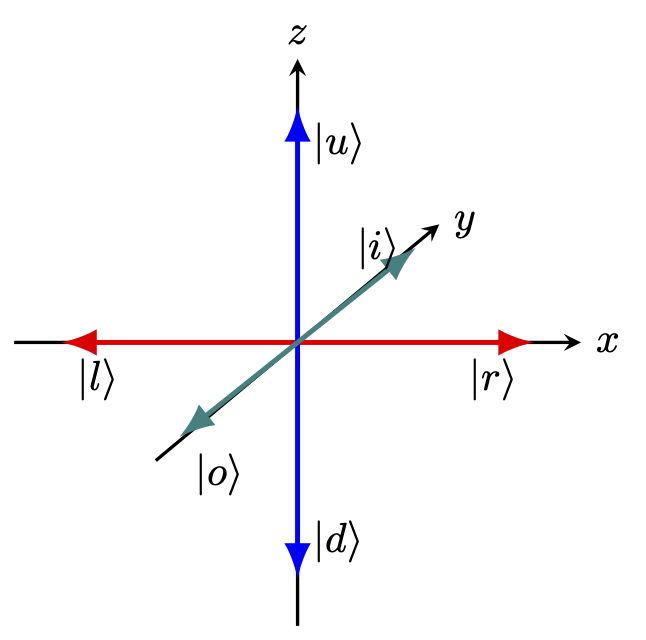

14.1 계와 실험
14.1.1 스핀의 방향성에 관하여
단 하나의 스핀 자유도 \(\sigma\) 를 갖는, 그리고 \(\sigma\) 는 \(\pm 1\) 의 값 가운데 하나의 값만을 가질 수 있는 계(System) 를 생각하자. 물리적으로는 \(\pm 1/2\) 가 맞겠지만 여기서는 간단히 \(\pm 1\) 이라고 하자. 이제 이 계를 하나의 큐빗(qbit) 으로 이루어진 계로 생각 할 수 있다. 이제 시간을 추상화 한 \(n\) 번째의 상태를 \(\sigma (n)\) 으로 기술하자. \(\sigma(n+1) = \sigma (n)\) 이라면 상태는 변화하지 않은 것이다. \(\sigma(n+1) = -\sigma(n)\) 이라면 상태가 변화한 것이다.
이제 이 상태, 즉 스핀을 측정하는 측정 장비 \(A\) 를 생각하자. 고전역학과의 결정적인 차이점 중의 하나는 고전역학에서는 계의 상태에 영향을 주지 않고 \(A\) 가 \(\sigma(n)\) 을 측정 할 수 있다는 것을 가정한다는 것이다. 그러나 아주 작은 세계를 탐구하는 양자역학에는 이 가정이 들어설 수 없다. 즉 \(A\) 와 상태는 필연적으로 상호작용하며 따라서 \(A\) 는 \(\sigma(n)\) 에 영향을 끼친다.
이 측정을 \(x,\,y,\,z\) 축을 따라서, 혹은 그 반대로 측정할 수 있다고 하자. 이제 축에 따라 \(\sigma_x,\,\sigma_y,\,\sigma_z\) 를 측정 할 수 있다. 이제 \(\sigma_z\) 를 측정한다. \(1\) 혹은 \(-1\) 값을 가질 수 있다. 그 후 실험장비를 중립으로 재 설정 한후 다시 \(\sigma_z\) 를 측정한다. 여러번 재측정해도 그 값이 변하지 않는다. 우리는 \(+z\) 방향으로 측정하는 것과 \(-z\) 방향으로 측정하는 것이 본질적으로 같다는 것을 알 수 있다. 또한 이 시스템이 어떤 상태로 즉 \(\sigma_z=1\) 이거나 \(-1\) 인 상태중의 하나로 준비되었다고 말 할 수 있다.
이제 실험장비를 \(z\) 축에 대해 뒤집어 측정해보자. 그렇다면 \(\pm\) 이 바뀐 결과가 나올 것을 예상 할 수 있으며, 실제로 그렇게 된다. 여기까지는 고전 물리와 양자 물리가 전혀 차이가 없다. 이제 \(\sigma_z=+1\) 상태로 준비시키고 난 후 \(A\) 장비를 90\(^\circ\) 돌려서 \(x\) 축 방향으로 측정한다면 어떻게 될까? 놀랍게도 통계적으로 \(\sigma_x\) 는 \(\pm 1\) 값이 동등한 수로 나온다. 즉 많은 횟수로 측정하면 \(\sigma_x=1\) 과 \(\sigma_x=-1\) 이 같은 횟수로 측정된다. 조건부 확률에 대한 수식으로 표현하면
\[ P(\sigma_x=+1 | \sigma_z=+1) = P(\sigma_x=-1 | \sigma_z=+1) = 0.5 \]
이다. \(\sigma_x\) 대신에 \(\sigma_y\) 즉 \(y\) 축에 대해 측정해도 마찬가지이다. 즉 \(\sigma_x\) 와 \(\sigma_y\) 의 평균값은 \(0\) 이다. 이를 뒤에 나올 디렉 표기법을 사용하면 \(\langle \sigma_x\rangle = \langle \sigma_y \rangle =0\) 이다. 이제 \(\sigma_x\) 를 측정 한 후 다시 \(\sigma_z\) 를 측정하면 \(+1\) 값이 나올까? 답은 아니오 이다. \(\sigma_x\) 를 측정한 후 \(\sigma_z\) 값은 \(\pm 1\) 이 같은 확률로 측정된다.
다시 \(\sigma_z=1\) 로 준비된 시스템을 생각하자. 그리고 \(z\) 축과 \(\theta\) 의 각도를 이루는 \(\hat{\boldsymbol{n}}\) 방향으로 측정한 다고 하자. \(\sigma\) 가 벡터라면 \(\sigma_\theta = \cos\theta\) 가 될 것이다. 그러나 우리는 \(\sigma_\theta\) 의 측정값은 \(+1\) 과 \(-1\) 뿐임을 안다. 놀랍게도 통계적으로 \(\langle \sigma_\theta \rangle = \cos \theta\) 이다. 이제 이것을 일반화 해보 자. \(\hat{\boldsymbol{n}}\) 방향에 대해 \(\sigma_n=+1\) 로 시스템을 준비시켰을 때 \(\hat{\boldsymbol{m}}\) 방향으로 스핀을 측정한다면 \(\sigma_m\) 값은 \(\pm 1\) 가운데 하나이지만 통계적인 평균값은
\[ \mathbb{E}[\sigma_m |\sigma_n = 1] = \hat{\boldsymbol{n}} \cdot \hat {\boldsymbol{m}} \]
이다. 여기서 \(\mathbb{E}[X| B]\) 는 \(B\) 사건이 일어났을 때의 \(X\) 의 기대값, 즉 조건부 확률에 대한 기대값을 의미한다.
14.1.2 무작위성에 대하여
자연스럽게 넘어가서 의식하지 못했을 수도 있지만 여기서 우리는 양자역학으로의 큰 도약을 수행했다. 즉 물리량에 대한 측정값이 결정되지 않고 최소한 어느정도는 무작위적으로 측정되었으며, 통계적인 평균값이 의미가 있었다. 이 무작위성은 어디에서 기인하는가 하는 것은 물리학에서 오랬동안 논쟁거리였다.
- 이 무작위성은 어떤 우리가 알지 못하는 변수에 의해 통제되는가? 그렇다면 그 변수는 측정할 수 있는가 아니면 원리적으로 측정 할 수 없는 변수인가?
- 반대로 이 무작위성은 어떤 변수에 의헤 통제되지 않는 자연의 본성인가?
본질적으로 이 문제는 아직 해결되지 않은 문제이며, 많은 물리학자들은 실용적인 이유로 두번째 입장, 즉 코펜하겐 해석의 입장을 견지한다. 우리도 여기서는 두번째 입장에서 설명할 것이다.
14.1.3 양자역학에서의 측정과 불확정성의 원리
앞서 잠시 언급했지만 고전역학에서는 하나의 측정이 상태를 교란시키지 않는다는 가정을 할 수 있다. 실제로는 교란을 피할수는 없지만, 그 교란을 최소화하고, 교란의 효과를 역추적하여 교란이 없었던 측정 직전의 상태를 명확하게 밝힐 수 있다는 것을 가정한다. 그리고 그것이 거시계의 자연을 잘 설명한다. 양자역학에서는 다르다. 양자역학은 물질의 기본적인 크기, 에너지, 운동량에 가까운 값을 다루기 때문에 교란은 필연적이며, 우리가 관심있는 시스템에 대해 강력하다. 앞의 실험으로 설명하자면 \(\sigma_z=1\) 로 준비된 상태에 대해 \(\sigma_x\) 를 측정하면 \(\sigma_z\) 로 결정된 상태가 교란되며, 따라서 \(\sigma_z\) 를 다시 측정했을 때 그 값이 \(\pm 1\) 이 모두 측정된다.
양자역학에서는 많은 경우 이러한 현상이 발생한다. 어떤 상태로 시스템을 준비 했을 때 다른 종류의 측정을 수행 한후 원래의 준비된 값에 대해 측정하면 원래의 준비된 값과 다른 값이 측정된다. 물론 그렇지 않은 경우도 있다. \(A\) 를 측정하고(이때의 측정값을 \(a\) 라고 하자) \(B\) 를 측정한 후(이 때의 측정값을 \(b\) 라고 하자) 다시 \(A\) 를 측정한다고 하자(이 때의 측정값을 \(a'\) 이라고 하자). 많은 경우 \(a\ne a'\) 이다. 측정 오차의 문제가 아니라 상태가 변한것이다. \(B\) 를 측정 했을 때 이미 더이상 \(a\) 값에 관련된 상태가 아닌 새로운 상태로 변화한 것이다. 이것에 대해 설명하는 것이 소위 불확정성의 원리(uncartainty principle) 이다.
14.1.4 \(\sigma_x,\, \sigma_y\) 에 대한 스핀의 표현
우리가 양자 상태를 안다고 말할 때, 그것은 우리가 앞으로 더 진행하는데 필요한 모든 시스템에 대한 정보를 안다는 것을 의미한다. 이제 앞서 처음에 설명한 두가지 스핀값을 가질 수 있는 상태를 생각하자. \(\sigma_z=+1\) 로 시스템이 준비되었다면 우리는 그 시스템의 양자 상태를 알고 있다고 말할 수 있다. 이제 \(\sigma_z=+1\) 인 상태를 \(|u\rangle\) 로 표기하며 \(\sigma_z=-1\) 인 상태를 \(|d\rangle\) 로 표기한다. 즉 \(\sigma_z=+1\) 로 준비되어 있다면 이 상태는 \(|u\rangle\) 상태이다. \(\sigma_x=+1\) 인 상태를 \(|r\rangle\) 로 \(\sigma_x=-1\) 인 상태를 \(|l\rangle\) 로 표기한다. \(\sigma_y=+1\) 인 상태를 \(|i\rangle\) 로 \(\sigma_x=-1\) 인 상태를 \(|o\rangle\) 로 표기한다. 각각 up, down, right, left, in, out 을 의미한다.

이제 스핀 상태는 두개의 값을 가질 있으므로 2차원 벡터공간에 표현 할 수 있다. 일반적인 상태 \(|\phi\rangle\) 은 \(|u\rangle\) 과 \(|d\rangle\) 의 선형결합으로 아래와 같이 쓸 수 있다\(^\ast\).
\[ |\phi\rangle = a_u |u\rangle + a_d |d\rangle \]
여기서 \(a_u,\,a_d\) 는 복소수값으로 \(|a_u|^2 = \overline{a_u}a_u\) 는 \(|\phi\rangle\) 상태에 대해 실험을 수행했을 때 \(\sigma_z=+1\) 가 측정될, 즉 \(|u\rangle\) 상태로 측정될 확률이다. 동일하게 \(|a_d|^2\) 는 \(|d\rangle\) 상태로 측정될 확률이다. \(a_u\) 와 \(a_d\) 는 확률 진폭(probability amplitude) 라고 부른다. 확률의 정의에 의해
\[ |a_u|^2 + |a_d|^2 = 1 \]
이어야 한다.
측정하기 전의 상태는 \(|u\rangle\) 과 \(|d\rangle\) 의 선형결합일 뿐이다. 이를 중첩(superposition) 이라고 한다. 즉 \(|\phi\rangle\) 은 \(|u\rangle\) 로도 \(|d\rangle\) 로도 될 수 있는 잠재적인 상태에 있다. 만약 무수히 측정했을 때 \(|u\rangle\) 만이 측정된다면 \(a_d=0\) 이며 이는 측정전에 우연이든 의도적이든 계가 \(|u\rangle\) 상태로 준비되었다는 것을 의미한다.
또 하나 중요한 것은 \(\langle d|u\rangle =0\) 이다. 수학적으로 \(|u\rangle\) 벡터와 \(|d\rangle\) 벡터는 직교한다는 의미이며 물리적으로는 \(|u\rangle\) 상태는 \(|d\rangle\) 상태로 측정될 확률진폭이 \(0\) 이라는 의미이다. 양자역학에서 시스템의 두 상태 \(|\phi\rangle\), \(|\psi\rangle\) 에 대해 \(\langle \psi | \phi \rangle\) 은 \(|\phi\rangle\) 상태가 \(|\psi\rangle\) 상태로 측정될 확률진폭을 의미한다. 따라서 임의의 상태 \(|\phi \rangle\) 에 대해
\[ \langle \phi | \phi\rangle = 1 \tag{14.1}\]
이어야 한다. 이것은 모든 양자상태에 동일하게 적용되며, 양자상태를 이렇게 확률진폭의 절대값의 제곱의 합이 \(1\) 이 되도록 특정 수를 곱해주는 것을 정규화(normalization) 이라고 한다.
이제 \(\sigma_x=+1\) 인 \(|r\rangle\) 상태와 \(\sigma_x=-1\) 인 \(|l\rangle\) 상태를 표현해 보자. 우선 \(|r\rangle\) 상태에 대해 \(\sigma_z\) 를 측정 했을 때 \(\pm 1\) 가 나올 확률은 각각 \(\frac{1}{2}\) 이다. 따라서 다음이 성립해야 한다.
\[ |\langle u| r\rangle|^2 = |\langle d|r\rangle|^2 = \dfrac{1}{2} \tag{14.2}\]
이를 만족하는 가장 간단한 표현은
\[ |r\rangle = \dfrac{1}{\sqrt{2}}|u\rangle + \dfrac{1}{\sqrt{2}}|d\rangle \tag{14.3}\]
이다. 물론 \(|r\rangle = a_u |u\rangle + a_d|d\rangle\) 에 대해 식 14.2 을 만족하는 \(a_u,\,a_d\) 값은 복소수이므로 무수히 많다. 이 모호함은 곧 해소된다. 이제 \(|l\rangle\) 을 같은 방식으로 표현해 보자. \(|l\rangle\) 역시 \(|u\rangle,\, |d\rangle\) 의 상태로 측정될 확률이 각각 \(\frac{1}{2}\) 이며 \(\langle l |r\rangle = 0\) 이어야 하므로
\[ |l \rangle = \dfrac{1}{\sqrt{2}}|u\rangle - \dfrac{1}{\sqrt{2}}|d\rangle \tag{14.4}\]
로 쓸 수 있다. 물론 여기에도 모호함이 있는데 실재로 \(|l'\rangle = \dfrac{e^{i\chi}}{\sqrt{2}}(|u\rangle - |d\rangle)\) 라고 하면 임의의 실수 \(\chi\) 에 대해 모든 조건을 만족한다. 실제로 \(|l'\rangle\) 이 \(|l\rangle\) 을 대채 할 수 있을 뿐만 아니라 물리적으로 구별 할 수 없다.
어떤 상태 \(|\phi\rangle\) 과 임의의 실수 \(\chi\) 에 대해 \(e^{i\chi}|\phi\rangle\) 과 \(|\phi\rangle\) 의 차이인 \(e^{i\chi}\) 를 위상 인자(phase factor) 라고 하며, 위상 인자는 크기가 \(1\) 인 복소수이다. 위상 인자만큼의 차이가 나는 두 상태는 구별 할 수 없으며 동일한 양자상태로 간주한다. 위상 인자만큼의 모호함을 위상적 모호함(phase ambiguity) 라고 한다.
이제 \(|i\rangle\) 과 \(|o\rangle\) 을 \(|u\rangle\), \(|d\rangle\) 로 표현해보자. 아래의 조건을 만족해야 한다는 것을 이해 할 수 있을 것이다.
\[ \begin{aligned} \langle i|i\rangle = \langle o |o \rangle = 1,\qquad \langle i|o\rangle = \langle o |i \rangle = 0, \\ |\langle u|i\rangle|^2 = |\langle d|i\rangle|^2 = |\langle l| i\rangle|^2 = |\langle r|i\rangle|^2 = \dfrac{1}{2}, \\ |\langle u|o\rangle|^2 = |\langle d|o\rangle|^2 = |\langle l| o\rangle|^2 = |\langle r|o\rangle|^2 = \dfrac{1}{2}.\\ \end{aligned} \tag{14.5}\]
이제 \(|i\rangle\) 과 \(|o\rangle\) 을 결정 할 수 있다.
\[ \begin{aligned} |i\rangle = \dfrac{1}{\sqrt{2}}|u\rangle + \dfrac{i}{\sqrt{2}}|d\rangle, \qquad |o\rangle = \dfrac{1}{\sqrt{2}}|u\rangle - \dfrac{i}{\sqrt{2}}|d\rangle \end{aligned} \tag{14.6}\]
물론 위상적 모호함은 남아 있으며, \(|i\rangle\) 과 \(|o\rangle\) 이 바뀔 수는 있지만 일단 이렇게 정한다면 위상적 모호함을 제외한 다른 모호함은 사라진다.
14.2 양자 역학의 원리
양자역학은 힐베르트 공간에서 기술된다. 힐베르트 공간은 우리가 익숙한 유한차원 내적 벡터공간의 성질을 모두 가지고 있는 무한차원 복소 벡터공간을 말한다.
원리 4. 에 대해 부연설명을 하자면 어떤 하나의 고유값 \(\lambda\) 를 가지는 벡터의 집합인 고유공간은 1차원 이상의 차원을 가질 수 있다. 따라서 고유값 \(\lambda\) 에 대한 고유공간 전체를 생각해 줘야 한다는 의미이다.
14.2.1 원리 1, 2 의 연습
이제 앞서 다뤘던 스핀 \(1/2\) 시스템에서의 \(\sigma_x,\,\sigma_y,\,\sigma_z\) 연산자를 힐베르트 공간에서 구축해보자. \(\sigma_x,\, \sigma_y,\,\sigma_z\) 와 각각에 대한 고유상태를 \(\sigma_z\) 에 대한 고유상태 \(|u\rangle,\, |d\rangle\) 을 기저로 하여 표현한다. \(\sigma_z\) 에 대해 \(\sigma_z |u\rangle = |u\rangle\), \(\sigma_z |d\rangle = -|d\rangle\) 이며, \(\langle u|d\rangle = 0\) 이므로 \(\langle u | \sigma_z | d\rangle = \langle d | \sigma_z | u\rangle=0\) 이다. 따라서 \(\sigma_z\) 를 2차원 벡터공간의 선형연산자로 표현하면
\[ \sigma_z= \begin{bmatrix}1 & 0 \\ 0 & -1\end{bmatrix} \]
이며 \(|u\rangle,\, |d\rangle\) 을 열벡터로 표현하면 아래와 같다.
\[ |u\rangle = \begin{bmatrix} 1 \\ 0 \end{bmatrix},\qquad |d\rangle = \begin{bmatrix} 0 \\ 1 \end{bmatrix}. \]
식 14.3, 식 14.4 로부터 \(\sigma_x\) 의 교유벡터 \(|r\rangle,\, |l\rangle\) 에 대한 행렬 표현을 얻을 수 있다.
\[ |r\rangle = \frac{1}{\sqrt{2}}\left(|u\rangle + |d\rangle \right) = \frac{1}{\sqrt{2}}\begin{bmatrix} 1\\ 1 \end{bmatrix},\qquad |l\rangle = \frac{1}{\sqrt{2}}\left(|u\rangle - |d\rangle \right) = \frac{1}{\sqrt{2}}\begin{bmatrix} 1\\ -1\end{bmatrix}. \]
\(\langle r|\sigma_x|r\rangle=+1\), \(\langle l|\sigma_x|l\rangle=-1\), \(\langle r|\sigma_x|l\rangle=\langle l|\sigma_x|r\rangle=0\) 으로부터
\[ \langle u|\sigma_x|u\rangle = \langle d|\sigma_x|u\rangle = 0,\qquad \langle u|\sigma_x|d\rangle = \langle d|\sigma_x|u\rangle = 1 \]
임을 알 수 있다. 따라서
\[ \sigma_x =\begin{bmatrix}0 & 1 \\ 1 & 0\end{bmatrix} \]
이다. 또한 식 14.6 로 부터 \(\sigma_y\) 의 고유벡터 \(|i\rangle,\, |o\rangle\) 에 대한 행렬표현을 얻을 수 있다.
\[ |i\rangle = \frac{1}{\sqrt{2}}\left(|u\rangle + i|d\rangle \right) = \frac{1}{\sqrt{2}}\begin{bmatrix} 1\\ i \end{bmatrix},\qquad |o\rangle = \frac{1}{\sqrt{2}}\left(|u\rangle - i|d\rangle \right) = \frac{1}{\sqrt{2}}\begin{bmatrix} 1\\ -i\end{bmatrix}. \]
같은 방법으로 \(\sigma_y\) 에 대한 행렬표현을 아래와 같이 얻을 수있다.
\[ \sigma_y = \begin{bmatrix} 1 & -i \\ i & 0 \end{bmatrix}. \]
이 세 행렬 \(\sigma_x,\,\sigma_y,\,\sigma_z\) 를 파울리 행렬(Pauli matrices) 라고 한다.
\[ \sigma_z= \begin{bmatrix}1 & 0 \\ 0 & -1\end{bmatrix},\quad\sigma_x =\begin{bmatrix}0 & 1 \\ 1 & 0\end{bmatrix},\quad\sigma_y = \begin{bmatrix} 0 & -i \\ i & 0 \end{bmatrix}. \tag{14.7}\]
파울리 행렬은 \(\sigma_z\) 의 고유공간에 대한 세 연산자 \(\sigma_z,\, \sigma_x,\, \sigma_y\) 에 대한 행렬표현이다. 여기에 \(|u\rangle,\, |d\rangle\) 을 작용시키면 다음과 같은 결과를 얻는다.
\[ \begin{aligned} \sigma_z|u\rangle & = |u\rangle,\\ \sigma_z|d\rangle & = |d\rangle,\\ \sigma_x|u\rangle & = |d\rangle,\\ \sigma_x|d\rangle & = |u\rangle,\\ \sigma_y|u\rangle & = -i|d\rangle,\\ \sigma_y|d\rangle & = i |u\rangle. \end{aligned} \tag{14.8}\]
14.2.2 원리 3 에 대하여
원리 3. 에 의해 벡터공간, 즉 상태공간 \(V\) 의 모든 벡터는 에르미트 연산자 \(A\) 의 고유벡터 \(\{|a_i\rangle\}\) 를 기저로 하여 표현될 수 있다. 즉 \(|\phi\rangle \in V\) 이면 \(|\phi\rangle = \sum_i c_i |a_i\rangle\) 인 \(c_i\) 가 유일하게 정해진다. \(A|a_i\rangle =\lambda_i |a_i\rangle\) 일 때 수학적으로는
\[ A|\phi\rangle = \sum_i c_i\lambda_i |a_i\rangle \]
이 된다. 물리적으로는 측정 이후 \(|\phi\rangle\) 은 \(A\) 의 고유벡터중의 하나만 남는다. 이것을 붕괴(collapse) 라고 한다.
14.3 시간에 대한 변화와 해밀토니안
시간 \(t\) 에 양자상태 \(|\mathscr{\Psi}\rangle\) 에 있는 닫힌계를 생각하자. 양자상태는 시간에 따라 변할 수 있으며 따라서 시간 변수를 포함하여 \(|\mathscr{\Psi} (t) \rangle\) 로 쓸 수 있다. 양자역학은 어떤 시간 \(t\) 에서의 양자상태를 안다면 이후의 시간에 대해서도 양자상태를 알 수 있다고 말한다. 시간 \(t=0\) 에서의 양자상태를 \(|\mathscr{\Psi} (0)\rangle\) 이라고 하고 시간 \(t\) 에서의 양자상태를 \(|\mathscr{\Psi}(t)\rangle\) 이라고 하자. 시간 \(0\) 에서 \(t\) 까지의 변화는 어떤 연산자 \(U(t)\) 를 통해 기술 할 수 있다. 즉,
\[ |\mathscr{\Psi} (t) \rangle = {U}(t)|\mathscr{\Psi}(0)\rangle \tag{14.9}\]
로 기술한다. 이 때 \(U(t)\) 를 시간 전개 연산자(time evolution operator) 혹은 시간 변화 연산자 라고 한다. 특정 시간 \(t'\) 을 기준으로 시간전개 연산자를 표현할 경우 아래와 같은 표현도 가능하다.
\[ |\mathscr{\Psi} (t)\rangle = U(t,\, t')|\mathscr{\Psi} (t')\rangle \tag{14.10}\]
14.3.1 시간 전개 연산자에 요구되는 성질
시간 전개 연산자의 성질이 아니라 시간 전개 연산자에 요구되는 성질이다. 즉 우리의 양자역학을 유지하기 위해서는 \(U(t)\) (혹은 \(U(t,\,t')\)) 이 어떤 형태든 무조건 가져야 할 성질이 존재한다.
1. 선형성
우선 시간 전개 연산자는 벡터공간에서 선형적이어야 한다. 즉 \(|\mathscr{\Psi}(0)\rangle = a_1 |\psi_1(0)\rangle + a_2 |\psi_2(0)\rangle\) 이라면,
\[ \begin{aligned} |\mathscr{\Psi} (t) \rangle &= U(t)|\mathscr{\Psi}(0)\rangle = a_1 U(t)|\psi_1(0)\rangle + a_2 U(t)|\psi_2(0)\rangle \\ &= a_1 |\psi_1(t)\rangle + a_2 |\psi_2(t)\rangle \end{aligned} \tag{14.11}\]
이어야 한다. 즉 상태가 중접된 양자상태의 미래는 각 상태의 미래의 중첩이다.
2. 연속성
자명하지만
\[ U(t,\,t) = I \tag{14.12}\]
이어야 한다.
3. Unitarity
\(\langle \mathscr{\Psi}(0)|\mathscr{\Phi} (0)\rangle=0\) 이라고 하자. 그렇다면 \(\langle \mathscr{\Psi} (t) | \mathscr{\Phi} (t) \rangle = 0\) 이어야 한다. 우리는 양자상태 \(|\mathscr{\Phi}\rangle,\, |\mathscr{\Psi}\rangle\) 에 대해
\[ \langle \mathscr{\Psi}(t) | \mathscr{\Phi}(t) \rangle = \langle \mathscr{\Psi}(0)|U^\dagger(t)U(t) |\mathscr{\Phi} (0)\rangle \]
임을 안다. \(|\mathscr{\Phi}\rangle,\, |\mathscr{\Psi}\rangle\) 을 모든 서로 다른 정규직교기저벡터로 생각하면
\[ U^\dagger U(t) = I \tag{14.13}\]
이어야 한다는 것을 안다. 즉 \(U(t)\) 는 unitary 연산자이어야 한다.
4. Composition property
\(|\mathscr{\Phi}(t) \rangle = U(t,\,t_0)|\mathscr{\Phi}(t_0)\rangle\) 이라고 하자. \(t<t_1<t_0\) 인 \(t_1\) 을 생각하자. 우리는 다음이 성립해야 한다는 안다.
\[ \mathscr{\Phi} (t) \rangle = U(t,\,t_0)|\mathscr{\Phi}(t_0)\rangle = U(t,\,t_1)|\mathscr{\Phi}(t_1)\rangle = U(t,\,t_1)U(t_1,\,t_0)|\mathscr{\Phi} (t) \rangle \]
즉
\[ U (t,\,t_0) = U(t,\,t_1)U(t_1,\,t_0) \tag{14.14}\]
이어야 한다.
14.3.2 해밀토니안
식 14.13 와 식 14.12 로부터 우리는 아주 작은 시간 변화 \(\varepsilon\) 에 대해 \(U(t)\) 를 1차 근사로 다음과 같이 쓸 수 있다는 것을 안다.
\[ U(\varepsilon) = I - i\varepsilon K \tag{14.15}\]
\(\hat{H}\) 는 무엇인지 \(i\) 는 왜 붙었는지는 일단 넘어가기로 하자. 즉 \(U(t)\) 는 어떤 연산자 \(\hat{K}\) 에 대해 위와 같이 표현 할 있다고 가정하자. 아니면 위와 같은 표현이 모순이 있는지 아닌지 확인해보자고 해도 무방하다. 어쨌든 식 14.15 처럼 표현했다면 다음도 성립한다.
\[ U^\dagger(\varepsilon) = I + i \varepsilon K^\dagger \tag{14.16}\]
아주 작은 시간동안에도 unitary 성질은 성립해야 한다. 따라서,
\[ I = U^\dagger(\varepsilon) U(\varepsilon) = (I +i\varepsilon K^\dagger)(I - i \varepsilon K) = I -i\varepsilon (K-K^\dagger) + O(\varepsilon^2) \]
이어야 하며, 이로부터 \(\hat{K}^\dagger = \hat{K}\) 가 성립해야 한다. 즉 \(\hat{K}\) 는 에르미트 연산자 여야만 한다. 이는 매우 중요한데 \(\hat{K}\) 가 관측량 일 뿐만 아니라 \(\hat{K}\) 의 고유벡터로 양자상태를 기술할 수 있다는 의미이기 때문이다.
이제
\[ |\mathscr{\Psi}(t+\varepsilon) \rangle = U(t+\varepsilon, t)|\mathscr{\Psi}(t)\rangle = |\mathscr{\Psi}(t)\rangle - i \varepsilon K|\mathscr{\Psi}(t)\rangle \]
을 얻으며 이로부터,
\[ \dfrac{|\mathscr{\Psi}(t+\varepsilon)\rangle - |\mathscr{\Psi} (t)\rangle}{\varepsilon} = - i K |\mathscr{\Psi} (t)\rangle \]
을 얻는다. \(\varepsilon \to 0\) 극한에 대해
\[ \dfrac{\partial |\mathscr{\Psi} (t)\rangle}{\partial t} = -i K|\mathscr{\Psi} (t)\rangle \tag{14.17}\]
을 얻는다. 이제 \(K\) 에 대해 생각해보자. \(K\) 는 시간의 역수의 차원을 가진다. 이제 플랑크 상수 \(\hbar = \dfrac{h}{2\pi} = 6.62607015 \times 10^{-34}\, \text{m}^2 \,\text{kg} / \text{s}\) 에 대해 \(H = \hbar K\) 라고 놓으면 \(\hat{H}\) 는 에너지와 같은 차원을 가지는 에르미트 연산자임을 안다. \(\hat{K}\) 가 에르미트 연산자이므로 \(H = \hbar K\) 가 에르미트 연산자임은 당연하다. 식 14.17 으로부터
\[ i\hbar \dfrac{\partial |\mathscr{\Psi} (t)\rangle}{\partial t} = K|\mathscr{\Psi} (t)\rangle \tag{14.18}\]
을 얻는다. 식 14.18 을 시간 의존 슈뢰딩거 방정식 (time-dependent Schrödinger equation) 이라고 한다. 또한 \(H\) 를 해밀토니안(Hamiltonian) 이라고 한다. \(H\) 가 해밀토니안이라는 고전역학에서 에너지에 대한 물리량과 같은 이름을 갖게 되는지는 좀 더 진행해 봐야 한다. 이를 위해서 잠시 길을 돌아가기로 하자.
14.3.3 기댓값
통계학적으로 기댓값은 표본에 대한 어떤 양의 평균값을 의미한다. 양자역학에서는 어떤 양 \(A\) 에 대한 기댓값은 \(A\) 에 해당하는 에르미트 연산자 \(A\) 에 대해 \(\langle A\rangle\) 로 표기하며 다음과 같이 정의된다.
\[ \langle A \rangle = \sum_{i} \lambda_i P(\lambda_i) \]
여기서 \(\lambda_i\) 는 \(A\) 의 고유값이며 \(P(\lambda_i)\) 는 \(\lambda_i\) 의 고유값을 가질 확률을 의미한다. 이제 양자상테 \(|\mathscr{\Psi}\rangle\) 를 \(A\) 의 고유벡터에 대한 정규직교기저 \(\{|a_i\rangle\}\) 로 표현하면
\[ |\mathscr{\Psi}\rangle= \sum_i c_i |a_i\rangle \]
이다. 이제 \(\langle \mathscr{\Psi} |\hat{A}|\mathscr{\Psi} \rangle\) 을 계산해 보자.
\[ \langle \mathscr{\Psi} | A|\mathscr{\Psi} \rangle = \sum_i \lambda_i |c_i|^2 = \sum_i \lambda_i P(\lambda_i) = \langle A\rangle. \]
14.3.4 위상 인자에 대해
우리는 앞서 어떤 양자상태에 위상 인자를 곱해도 구별 할 수 없다고 했다. \(|\mathscr{\Phi} \rangle = e^{i\chi}|\mathscr{\Psi}\rangle\) 이라고 하자. 이 때 연산자 \(A\) 에 대해
\[ \begin{aligned} \langle \mathscr{\Phi} |\mathscr{\Phi}\rangle &= \langle \mathscr{\Psi} |\mathscr{\Psi} \rangle, \\ A |\mathscr{\Phi}\rangle = a|\mathscr{\Phi} \rangle &\iff A|\mathscr{\Psi}\rangle = a|\mathscr{\Psi} \rangle, \\ \langle \mathscr{\Phi}|A|\mathscr{\Phi} \rangle &= \langle \mathscr{\Psi} |A|\mathscr{\Psi} \rangle \end{aligned} \]
이 성립함을 알 수 있다. 즉 위상인자는 우리가 측정하고 계산하는 모든 실제적인 양에 영향을 끼치지 않는다.
14.3.5 해밀토니안인 이유
이제 \(\langle \hat{A}\rangle\) 이 시간에 따라 어떻게 변하는지 알아보자. 식 14.18 로부터
\[ i\hbar\dfrac{\partial |\mathscr{\Psi} (t)\rangle}{\partial t} = H |\mathscr{\Psi} (t) \rangle \]
이며,
\[ \dfrac{\partial}{\partial t}\langle \mathscr{\Psi}(t) |\mathscr{\Psi} (t) \rangle = \dfrac{\partial }{\partial t} 1 = 0 \]
이다. 따라서, \(\hat{H}^\dagger = \hat{H}\) 임을 이용하면
\[ \begin{aligned} 0 &= \langle \partial_t \mathscr{\Psi}(t) |\mathscr{\Psi} (t)\rangle + \langle \mathscr{\Psi}(t) | \partial_t \mathscr{\Psi}(t)\rangle \\ & = \langle \partial_t \mathscr{\Psi} (t) |\mathscr{\Psi} (t)\rangle + \langle \mathscr{\Psi} (t)| \left(- \dfrac{i}{\hbar} H |\mathscr{\Psi} (t)\rangle\right) \\ &= \langle \partial_t \mathscr{\Psi} (t) |\mathscr{\Psi} (t)\rangle - \left(\dfrac{i}{\hbar} \langle \mathscr{\Psi} (t)|H \right) |\mathscr{\Psi} (t)\rangle \\ &= \left(\langle \partial_t \mathscr{\Psi} (t)| - \dfrac{i}{\hbar}\langle \mathscr{\Psi}(t) | H\right) |\mathscr{\Psi} (t) \rangle \end{aligned} \]
이어야 하므로,
\[ \dfrac{\partial \langle \mathscr{\Psi}(t) | }{\partial t} = \langle \partial_t \mathscr{\Psi} (t)| = \dfrac{i}{\hbar}\langle \mathscr{\Psi}(t) |H \]
이다. 이로부터
\[ \begin{aligned} \dfrac{d}{dt} \langle \mathscr{\Psi}(t)| A |\mathscr{\Psi} (t)\rangle &= \langle \partial_t \mathscr{\Psi} (t) | A |\mathscr{\Psi} (t)\rangle + \langle \mathscr{\Psi} (t) | A | \partial_t \mathscr{\Psi} (t) \rangle \\ &= \dfrac{i}{\hbar} \langle \mathscr{\Psi} (t)| HA |\mathscr{\Psi} (t) \rangle - \dfrac{i}{\hbar} \langle \mathscr{\Psi} (t)| AH|\mathscr{\Psi} (t) \rangle \\ &= \dfrac{i}{\hbar}\langle \mathscr{\Psi}(t) |\left(HA - AH\right) |\mathscr{\Psi} (t) \rangle \end{aligned} \tag{14.19}\]
을 얻는다. 여기서 중요한 개념이 등장한다.
이를 이용하면 식 14.19 으로부터 다음을 얻는다.
\[ \dfrac{d\langle A \rangle}{dt} = -\dfrac{i}{\hbar}\langle [A,\, H] \rangle. \tag{14.20}\]
고전역학의 푸아송 괄호(Poisson braket) 을 생각하자. 해밀토니안 \(H\) 와 물리량 \(A\), 그리고 canonical coordinate \(\{q_i\}\) 와 그 conjugate momentum \(\{p_i\}\) 사이에 다음의 관계가 성립한다는 것을 안다.
\[ \dfrac{dA}{dt} = \left\{A,\, H\right\} = \sum_i \left(\dfrac{\partial A}{\partial q_i}\dfrac{\partial H}{\partial p_i} - \dfrac{\partial A}{\partial p_i}\dfrac{\partial H}{\partial q_i}\right) \tag{14.21}\]
식 14.20 와 식 14.21 으로부터 고전역학과 양자역학 사이의 유사성을 발견한 사람은 디랙이다. 교환자와 푸아송 괄호의 형식적 유사성은 다음과 같이 표현 할 수 있다.
\[ [A,\, B] \iff i\hbar \{A,\,B\}. \tag{14.22}\]
여기에 대해서는 향후 불확정성의 원리에서 깊이 다루기로 하자. 어쨌든 식 14.20 와 식 14.21 으로부터 \(\hat{H}\) 가 고전역학의 해밀토니안 \(H\) 에 상응하는 것이라는 것을 알 수 있다. 이 때문에, 그리고 실제로 \(\hat{H}\) 연산자가 계의 에너지를 의미하기 때문에 \(\hat{H}\) 를 해밀토니안 연산자라고 한다.
14.3.6 양자역학에서의 보존량
고전역학에서 어떤 양이 보존이라는 것은 시간에 대해 상수라는 의미이다. 식 14.20 로 부터 \([\hat{A},\, \hat{H}]=0\) 이 되는 양 \(A\) 는 시간에 대해 보존된다는 것을 알 수 있다. 양자역학에서의 보존이라는 의미는 해밀토니안에 대해 그 교환자가 \(0\) 이라는 의미이다.
가정 대표적인 보존량은 해밀토니안 자신이다. 우리는 \([H,\, H]=0\) 이라는 것을 알 수 있다.
14.3.7 슈뢰딩거 방정식
우리는 시간 전개 연산자 \(U(t,\,t')\) 이 궁극적으로 해밀토니안 연산자 \(H\) 에 대한 함수라는 것을 알았다. 또한 어떤 물리량 \(A\) 의 시간적 변화는 \(H\) 와의 교환자 \([A,\, H]\) 의 기대값이라는 것도 알게 되었다. 하지만 우리가 아는 것은 해밀토니안 연산자라는 것이 존재할 수 있으며 의미있다는 것이지, 그것이 실제로 어떤 형태인지는 모른다. 해밀토니안 연산자는 유사 시스템에 대한 고전역학적인 해밀토니안으로부터 얻을 수도 있고, 시스템을 분석하여 예상할 수도 있으며, 그냥 선언 할 수도 있다. 우리가 아는 것은 다음의 시간 의존적 슈뢰딩거 방정식 뿐이다.
\[ i\hbar\dfrac{\partial |\mathscr{\Psi}(t)\rangle}{\partial t} = H|\mathscr{\Psi}(t)\rangle \]
\(H\) 가 에르미트 연산자이므로 \(H\) 에 대한 고유벡터로 상태를 기술 할 수 있다. \(E_i\) 의 고유값을 갖는 \(H\) 의 고유벡터를 \(|E_i\rangle\) 이라고 하면
\[ H|E_i\rangle = E_i |E_i\rangle \tag{14.23}\]
을 얻는다. 식 14.23 을 시간 독립 슈뢰딩거 방정식(time-independent Schrödinger equation) 이라고 한다. 시간 독립 슈뢰딩거 방정식으로부터 고윳값 \(E_i\) 에 대한 고유공간을 구할 수 있다. 이 고유공간은 1차원 일 수도 있고, 다차원일 수도 있다. 다차원의 경우에는 서로 직교하는 고유벡터를 \(|E_i^{(j)}\rangle\) 과 같이 기술 할 수 있다.
14.3.8 시간독립적인 해밀토니안과 시간에 대한 변화
해밀토니안 \(\hat{H}\) 가 시간 독립적이라고 하자. 즉 \(\partial_t \hat{H} = 0\) 이라는 의미이다. 그렇다면 해밀토니안의 고유값과 고유벡터 역시 변하지 않는다. 이제 시간 독립 슈뢰딩거 방정식을 이용하여 시간 의존 슈뢰딩거 방정식을 풀어보자. \(|\mathscr{\Psi} (0)\rangle\) 을 해밀토니안 연산자의 고유벡터로 다음과 같이 전개 할 수 있다.
\[ |\mathscr{\Psi}(t) \rangle = \sum_j a_j(t) |E_j\rangle. \]
상태벡터 \(|\mathscr{\Psi}\rangle\) 은 시간에 대해 변하지만 그 기저벡터는 변하지 않으므로 \(a_j\) 가 시간에 따라 변해야 한다. 이제 시간 의존 슈뢰딩거 방정식에 대입하면,
\[ \sum_j \dfrac{d a_j(t)}{dt} |E_j\rangle =-\dfrac{i}{h} \sum_j E_j a_j (t) |E_j\rangle \]
이며 여기에 임의의 \(\langle E_k|\) 에 대해 내적을 구해주면
\[ \dfrac{d a_k(t)}{dt} = - \dfrac{i}{\hbar}E_k a_k(t) \]
를 얻는다. 이 미분방정식에 대한 해는 우리가 이미 잘 알고 있다.
\[ a_k (t) = a_k(0) \exp \left(- \dfrac{i}{\hbar} E_k t\right) \]
즉,
\[ |\mathscr{\Psi}(t)\rangle = \sum_j a_j(0) e^{-\frac{i}{\hbar}E_j t}|E_j\rangle \tag{14.24}\]
이다. 여기서 \(a_j(0) = \langle E_j | \mathscr{\Psi}(0)\rangle\) 이므로 식 14.24 을 다음과 같이 쓸 수 있다.
\[ |\mathscr{\Psi}(t)\rangle = \sum_j |E_j\rangle \langle E_j| \mathscr{\Psi}(0)\rangle e^{-\frac{i}{\hbar}E_j t} \tag{14.25}\]
14.4 파동함수와 불확정성의 원리
앞서 양자역학의 원리 3. 에서도 언급했지만 우리가 어떤 계에 대해 \(A\) 를 측정하는 실험을 하면 이 계는 \(A\) 의 고유상태중의 하나로 남는다. 이를 파동함수의 붕괴(collapse of wave function) 이라고 한다. 우리는 스핀 \(1/2\) 시스템에서 \(|u\rangle\) 로 준비된 시스템에 대해 \(\sigma_x\) 를 측정 했을 때 이 계가 \(\sigma_x\) 의 두 고유상태중의 하나만 남는다는 것을 알았다. 우리가 이 측정과 상태에 대해 이해하기 위해서는 소위 불확정성에 대해 좀 더 이해해야 한다.
어떤 두 측정은 서로 완전히 독립적이라 하나의 측정이 다른 하나의 측정에 영향을 끼치지 않을 수 있다. 그러나 어떤 두 측정은 하나의 측정이 다른 하나의 측정에 영향을 준다. \(L\) 과 \(M\) 의 두 측정, 혹은 두 에르미트 연산자를 생각해보자. 우리는 명제 1.5 에서 \([L,\,M]=0\) 인 것과 \(L\) 과 \(M\) 에 대한 동시 고유벡터로 이루어진 기저가 존재한다는 것이 수학적으로 동치라는 것을 보였다. 이 때 \([L,\, M]=0\) 인 것을 두 연산자 \(L,\, M\) 이 교환 가능하다라고 한다.
14.4.1 파동 함수
어떤 양자 상태 \(|\mathscr{\Psi}\rangle\) 을 생각하자. 그리고 이 계의 관측량에 대한 교환 가능한 에르미트 연산자 \(A,\,B,\,C, \ldots\) 와 그 고유값에 대한 변수 \(a,\,b,\,c\ldots\) 를 생각하자. 우리는 정규 직교 기저를 이 변수들 \(a,\,b,\,c\ldots\) 로 기술 할 수 있다. 즉 각각의 \(a,\,b,\,c,\ldots\) 값에 대해 \(|a,b,c,\dots\rangle\) 는 이 힐베르트 공간의 정규직교기저를 이룬다. 따라서 \(|\mathscr{\Psi}\rangle\) 은 이 정규직교기저의 선형결합으로 다음과 같이 표현 할 수 있다.
\[ |\mathscr{\Psi} \rangle = \sum_{a,b,c,\ldots} \psi(a,\,b,\,c,\ldots) |a,\,b,\,c,\ldots\rangle. \tag{14.26}\]
이 때 \(\psi(a,\,b,\,c,\ldots) = \langle a,b,c,\ldots|\mathscr{\Psi}\rangle\) 로 수학적으로는 위의 선형결합에서의 계수(coefficients) 이며 물리적으로는 \(|\mathscr{\Psi}\rangle\) 에 대해 \(A,\,B,\,C,\ldots\) 를 측정했을의 측정값이 \(a,\,b,\,c,\ldots\) 가 될 확률밀도함수이다. 이 때 \(\mathscr{\Psi}(a,\,b,\,c,\ldots)\) 를 \(A,\,B,\,C,\ldots\) 가 정의하는 기저에서의 \(|\mathscr{\Psi}\rangle\) 의 파동함수(wave function) 이라고 한다\(^1\).
파동함수가 가져야 할 가장 중요한 특징중의 하나는 확률의 총합이 \(1\) 이어야 한다는 것이다. 이는 \(\langle \mathscr{\Psi} | \mathscr{\Psi} \rangle =1\) 로부터 나오며
\[ \sum_{a,b,c,\ldots} \psi^\ast (a,b,c,\ldots) \psi(a,b,c,\ldots) = 1 \]
임을 의미한다. 만약 \(b,\,c\) 가 연속적인 값을 갖는다면 \(\sum\) 이 아닌 적분 \(\int\) 가 되야 할 것이다. 예를 들어 \(\hat{A},\,\hat{B},\,\hat{C},\hat{E}\) 에 대한 고유값 변수 \(a,\,b,\,c,\,e\) 에 대해 \(b,\,c\) 가 연속적인 값을 갖는다면
\[ 1 = \sum_{a,\,e} \iint \psi^\ast (a,b,c,e) \, \psi(a,b,c,e) db\, dc \]
가 된다. 여기서 \(\psi^\ast\) 는 \(\psi\) 의 complex conjugate 이다. 식 14.26 으로부터 다음을 알 수 있다.
\[ \langle \Psi | = \sum_{a,\,b,\,c} \psi^\ast (a,\,b,\,c,\ldots) \langle a,\,b,\,c | \tag{14.27}\]
우리는 양자상태(\(\mathscr{\Psi}\)) 와 파동함수 (\(\psi\)) 를 구별했다. 적지 않은 경우에는 둘을 혼용하긴 하지만 그 개념을 명확히 구분할 수는 있어야 한다. 파동함수는 특정한 측정값들이 어떤 값을 가지는지에 대한 양자상태의 확률밀도함수이다.
14.4.2 불확정성의 원리
파동함수는 교환가능한 연산자의 고유값의 집합으로 기저를 구성하여 양자상태를 표현한 함수라는 것을 알았다. 그렇다면 서로 교환 가능하지 않은 연산자들에 대해 생각해보자. 두 연산자 \(\hat{A},\,\hat{B}\) 가 서로 교환 가능하지 않다고 하자. 그리고 연산자 \(A\) 에 대해 \((\Delta A)^2\) 를 아래와 같이 정의하자.
\[ (\Delta A)^2 := \langle \mathscr{\Psi}| (A-\langle A\rangle\hat{I})^2|\mathscr{\Psi} \rangle \tag{14.28}\]
라 하자. 통계학에서는 어떤 변수 \(X\) 와 그 평균 \(\overline{X}\) 에 대해 \((X-\overline{X})^2\) 의 평균값을 분산(variation) 이라 하며 그 제곱근을 표준 편차(standard deviation) 이라고 한다. 식 14.28 는 관측량 \(\hat{A}\) 의 측정에서의 분산, 즉 표준편차의 제곱값의 기대값이다.
이제 서로 교환되지 않는 두 관측량 \(\hat{A},\, \hat{B}\) 와 임의의 양자상태 \(|\mathscr{\Psi}\rangle\) 에 대해
\[ |X\rangle = A|\mathscr{\Psi}\rangle,\, |Y\rangle = i B |\mathscr{\Psi} \rangle \tag{14.29}\]
이라 하자. 우리는 코시-슈바르츠 부등식(Cauchy-Schwartz inequality)
\[ |\langle X|Y\rangle | \le \|X\| \|Y\| \]
으로부터
\[ 2\|X\| \|Y\| \ge | \langle X|Y\rangle | + |\langle Y|X\rangle | \ge | \langle X|Y\rangle + \langle Y|X\rangle| \tag{14.30}\]
을 얻는다. 식 14.29 을 식 14.30 에 대입하면,
\[ 2\sqrt{\langle A^2 \rangle \langle B^2 \rangle } \ge |\langle \mathscr{\Psi} | [A,\,B] |\mathscr{\Psi} \rangle | \tag{14.31}\]
이다. 이제 \(A,\,B\) 를 각각 \(A - \langle A \rangle I,\, B-\langle B\rangle I\) 로 바꾸자. 그렇다면 식 14.31 의 우변은
\[ \begin{aligned} \mathscr{\Psi} | [A - \langle A\rangle I,\, B - \langle B\rangle I]|\mathscr{\Psi} \rangle = \langle \mathscr{\Psi} | [A,\, B\,] | \mathscr{\Psi} \rangle \end{aligned} \]
이 되기 때문에
\[ (\Delta A)(\Delta \hat{B}) \ge \dfrac{1}{2} \left|\langle \mathscr{\Psi} | [A,\, B]|\mathscr{\Psi} \rangle \right| \tag{14.32}\]
을 얻는다. 이것이 불확정성의 원리 (Uncertainty principle) 이다.